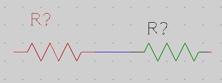
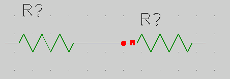

gschem Warmup for Beginners
You need to become familiar with doing a few things in gschem, so
just run gschem and start playing around:
You get an initial blank page with a menus and a toolbar at the
top. As you select operations from the menus, notice that there
are usually keyboard shortcuts which can alternatively be used to
access the menu functions.
When drawing a schematic, It's a good idea to always start
by setting some schematic boundaries to draw within, so we will do this by
adding a titleblock. I find that using a B sized titleblock lets
my schematics print at a nice size on letter sized paper:
-
Bring up the Select Component window by
selecting from the menu Add->Component or hit keyboard
shortcut i.
Or you could click the add component icon on the toobar.
- In the Libraries list, select titleblock.
- Under the Components list, select title-B.sym.
- Move the mouse onto the gschem drawing area and place the
titleblock symbol by clicking the left mouse button.
Then click the right mouse button to abort adding more
titleblock symbols.
- With the mouse in the gschem drawing area, hit the keys ve
(or View->Zoom Extents) to zoom the view to the titleblock
symbol extents.
- Back in the select components window, (bring it up again if
you closed it). Select the analog Library and then
select the Component resistor-1.sym and place a couple of
resistors on the schematic with the left mouse button. Notice
that as you place each one it is a red color and that indicates
it is selected.
- Zoom in and out with z and SHIFT z. If you get lost,
zoom back to extents with ve.
- Alternate left clicking on both resistors to select them,
but notice that if you don't hit the resistor just right, the
titleblock is selected instead. We really don't want to ever
select the titleblock again, so we can lock it to prevent
its irritating selection: click so the titleblock IS selected, then
select Edit->Lock. Now it's easier to select the
resistors as we like.
- Move the resistors around with the middle mouse button
- Select a resistor and then rotate with the er keys
or the Edit->Rotate 90 Mode
- Move the resistors relatively close together and then zoom
in on them.
- Place the mouse on one of the resistor pins and hit the
n key to start adding a net. Move the mouse to
a pin on the other resistor and left click to attach
the net to the pin. Right click to abort adding this net
but notice that if you left click again you will start adding
another net.

Look at the toolbar and see that your mode has
switched to adding nets. Before you can change resistor
selections again, you will have to re-enter select mode
with the s key or by clicking the select toolbar icon
or by using the Edit menu. But if you try to move
a resistor with the middle mouse button, you can do it and
you will automatically re-enter select mode. You will
have to play with doing things to get used to the gschem modes.
- If when you added the net between the resistors you get
something that looks like this:

It means you missed the pin on the right resistor. Look
closely and you'll see the tip of the pin is red and you
must start and stop nets with the mouse on this red spot
to make a connection to the pin.
- Select the net between the resistors and delete it with
the Delete key.
- Select a resistor and hit the ee keys. This will
pop up the attribute editing window for the resistor.
Here you can change existing attribute values or add
new attributes with values to the resistor. Practice
well with adding attributes and changing attribute values
because you will need to be very familiar with managing
attributes when using gschem.
Now go back to the tutorial and try working through the simple
example there. If you encounter steps that aren't clear, look
through
the gschem user documentation and attributes documentation
on the
gEDA Documentation page.
Back to gsch2pcb Tutorial
Bill Wilson bill--at--gkrellm.net